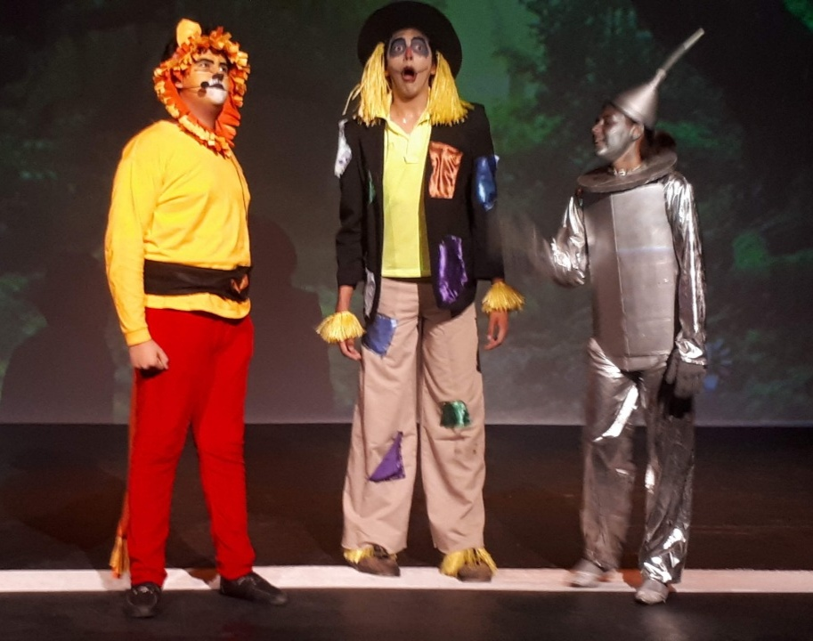

This type of xpression in kind of special because it have been the principal example of performing art thanks to its history and impact in the society. In fact, the history of theater can be traced back to 6th Century B.C. where the Ancient Greeks were the first to present dramatic presentations.
Theater is an art concerned almost exclusively with live performances in which the action is precisely planned to create a coherent and significant sense of drama. For centuries people have enjoyed drama, comedy, music, and other forms of entertainment.
Also is engineering thanks to the combination of music, literature, and dancing (and an beautiful of art and design). I think this is because the basic performances function as one performer's job and can depend on located objects and space. Many performances require the efforts of professionally trained and creative individuals.
The thater, as a type of expression, has been expanding through the past of the years, making that different cultures take this technique and adapt it to express what they want, expanding exponentially the types styles in this art.
One thing that I consider very important is that is not the same apreciating a theater shown that been part of it, in my experience I would say that the experience of forming part of this is awesome, having funny been anybody singing, dancing, playing to finally receive the claim of the public, their admiration and also a living is very, very incredible.
Some examples of theater genres:
If you have something to tell me send me a message to: artists4ever@gmail.com